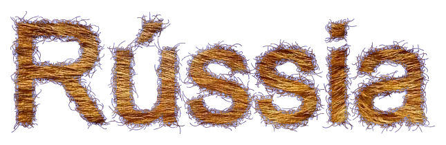
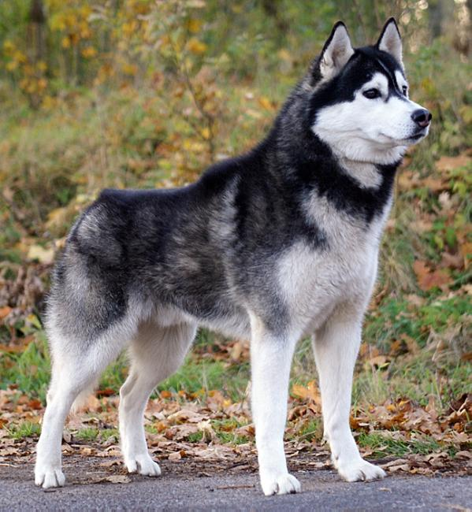
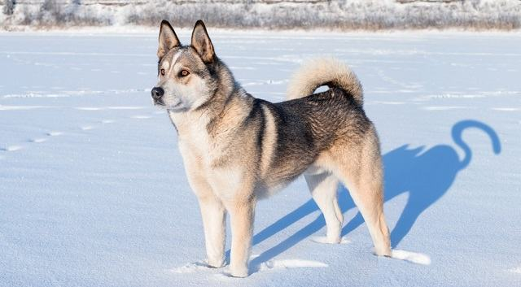
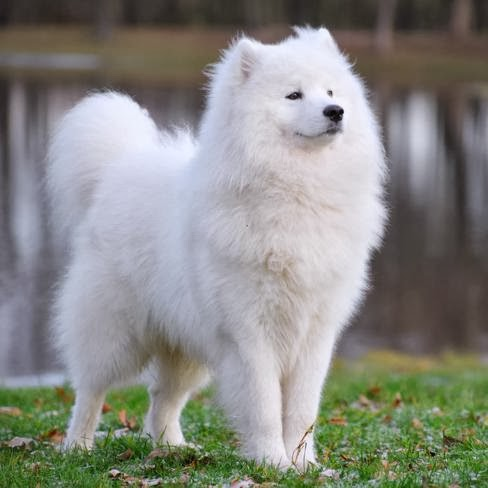

Husky
O Husky vem da região do rio Kolyma, na Sibéria do Norte, onde teria surgido há cerca de 2 mil anos. A raça foi desenvolvida e fixada por uma tribo seminómade, os Chuktii, para puxar trenós e pastar o gado. Inteligente e gentil, o Husky Siberiano esta sempre alerta e é sociável. Ele também é de uma natureza muito independente e caçadora. Dócil em alguns momentos, o Husky Siberiano tende a esquecer o seu treino em mais que uma ocasião.
| Expectativa de Vida | Altura | Peso | |
|---|---|---|---|
| Mínimo | 12 Anos | 51 cm | 15 kg |
| Máximo | 15 Anos | 60 cm | 28 kg |
Laika
Esta raça veio a ser formada pelos cruzamentos de variedades da Laika com os cães dos caçadores russos do Norte Uraliano e da Sibéria oriental. É um cão ágil, forte, e com uma estrutura constituída por membros rígidos e potentes. Foi o primeiro animal a ser encaminhado para o espaço, no ano de 1957 e também foi o primeiro a morrer em órbita. Os exemplares desta raça costumam ser muito barulhentos, o que lhe indica uma característica de grande liderança e proteção de regiões com grandes espaços.
| Expectativa de Vida | Altura | Peso | |
|---|---|---|---|
| Mínimo | 10 Anos | 50 cm | 25 kg |
| Máximo | 12 Anos | 58 cm | 40 kg |
Samoyed
É um cão de porte bastante atlético, muito musculado, de espírito dinâmico e alegre. O Samoyed é um cão considerado bastante doce, submisso, expressivo e também carinhoso, apesar de não ser tão apegado aos donos, é uma raça muito dinâmica mas não nervosa. O cão é um companheiro encantador e excelente. Muito brincalhão, costuma desenvolver a habilidade de comunicar com seus donos. Eram utilizados para orientar e guardar renas de pastores. O Samoieda é um cão que se adapta muito melhor a regiões frias.
| Expectativa de Vida | Altura | Peso | |
|---|---|---|---|
| Mínimo | 12 Anos | 50 cm | 17 kg |
| Máximo | 14 Anos | 60 cm | 32,5 kg |